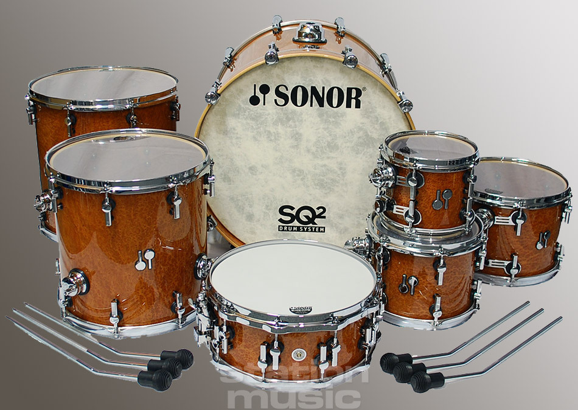
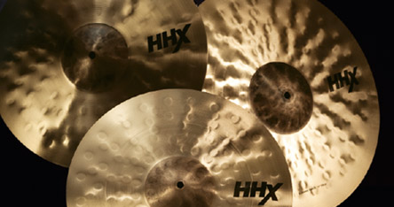

-
Придумай свой дизайн и закажи на одном сайте.
Компания Sonor запустила новый 3D конфигуратор для серии ударных кастом установок SQ2. Разработка приложения длилась больше года. Функции конфигуратора установки напоминают программное обеспечение для 3D‐дизайнеров автомобильной промышленности и позволяют собрать уникальный сет. Приложение работает на всех платформах. Цена подобранной конфигурации отображается в реальном времени, реагируя на изменения. Собранную установку можно отправить в социальные сети и напрямую ближайшему дилеру Sonor. Компания Sonor после предоплаты приступает к изготовлению на своей фабрике в Бад‐Берлебурге (Германия).
Ссылка на конфигуратор: http://www.sq2-drumsystem.com/.
Видеообзор: SonorDrumTube
-
Бегом за тарелками!
Акция!
Компания “Guitarland” объявила распродажу на продукцию известного бренда “Sabian”.
Сэ́биан (во франц. произношении Сабья́н, в армянском “Сэбиян”) — канадский и армянский производитель музыкальных инструментов — тарелок. Является одним из ведущих мировых производителей тарелок, наряду с Zildjian, Meinl, Paiste
На сайте sabian.com можно послушать различные тарелки и узнать об артистах, которые представляют данный бренд. Среди эндорсеров Sabian такие великие барабанщики как : Mike Partnoy(Dream Theater), Jojo Mayer(Nerve), Ray Luzier(Korn) ,Billy Cobham(Billy Cobham Band).
Компания “Guitarland” предоставляет 20% скидку на все товары “Sabian”. Посмотреть каталог скидок можно здесь.
Неольшая экскурсия на производство тарелок Sabian : https://youtu.be/F2rxNwYcsN8
-
Фильм об одном из лучших барабанщиков нашего времени.
“Меняющий время” так называется документальный фильм о Джоджо Майере который рассказывает о философии музыканта, о его жизни и взглядах на творчество.
Jojo Mayer один из выдающихся барабанщиков в таких стилях как drum‘n’bass, electro, hip–hop. Jojo получил свою первую ударную установку в два года, а в три дал свой первый концерт. Jojo Mayer бросил вызов электронным драм–машинам и победил, тем самым задал новые стандарты для современного баранщика. Так же Jojo является автором двух видео школ:“Secret Weapons for the Modern Drummer”и “Guide to Foot Technique”.
Сслка на фильм с русской озвучкой : https://www.youtube.com/watch?=m82yw-ZmKTo